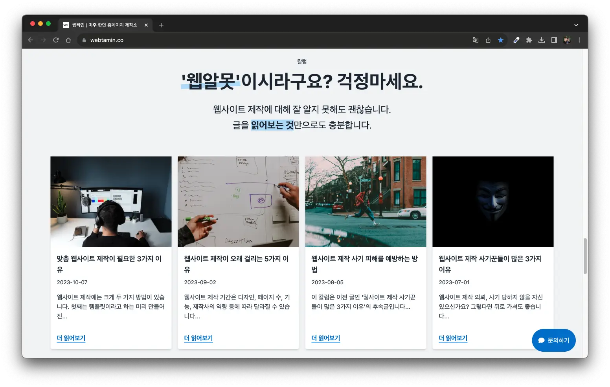
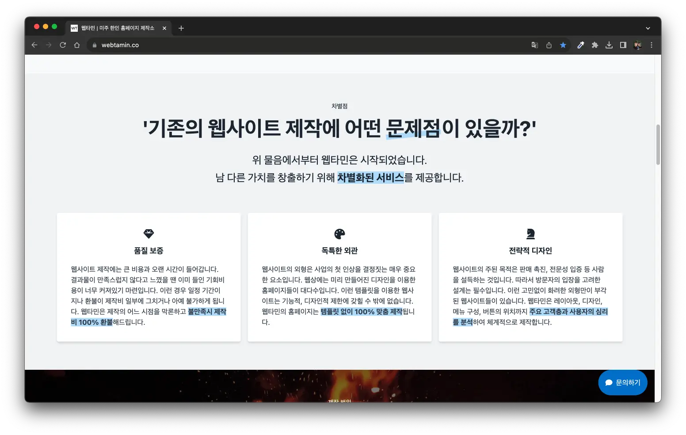
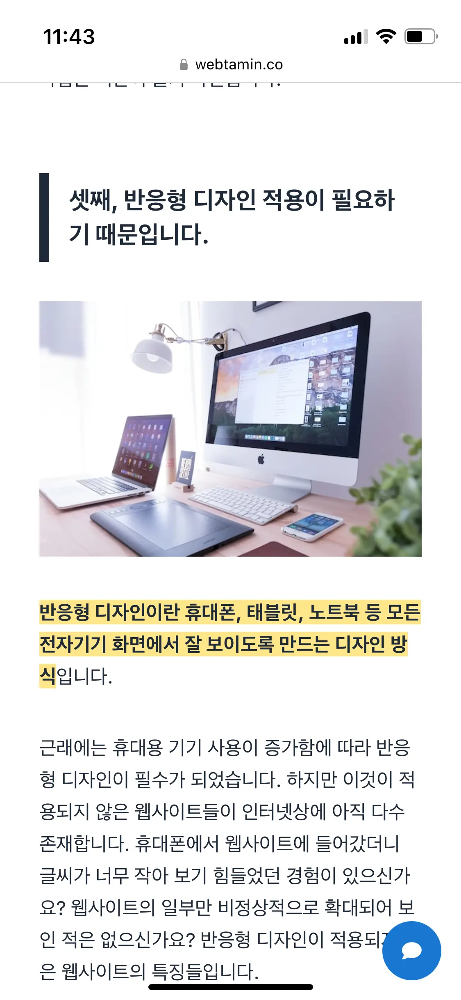
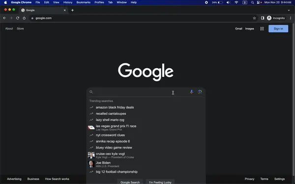
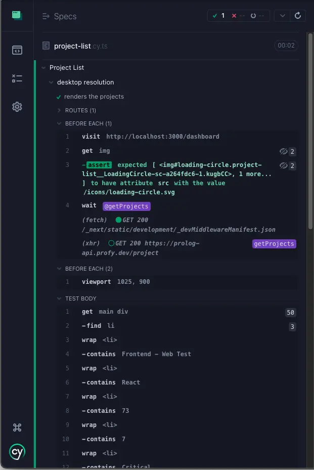

웹사이트 제작 기간은 디자인, 페이지 수, 기능, 제작사의 역량 등에
따라 달라질 수 있습니다. 맞춤형 디자인 홈페이지의 경우 대략
평균적으로 4주 - 12주 정도 소요됩니다. 이 시간 동안 제작사는
무엇을 하는 걸까요?
이번 칼럼에서는
웹사이트 개발에 시간이 걸리는 5가지 이유를 알아볼 것입니다. 내용이 어려워지지 않도록 최대한 핵심을 위주로
쉽고 간결하게 구성했습니다. 이 글을 읽으시면 웹사이트 제작 의뢰
이후의 대기 시간이 이유있는 기다림이 될 것입니다. 웹사이트 제작
과정의 흐름 또한 들여다볼 수 있을 것입니다.
실제 웹타민 홈페이지 개발 과정을 예시로 알아보겠습니다.
첫째, 웹사이트 목적에 맞춘 전략 분석이 필요하기 때문입니다.

웹사이트를 제작하는 이유가 무엇인가요? 먼저 제작사는 고객이
달성하고자 하는 목표를 정확하게 파악해야 합니다. 이후엔 이것을
웹사이트에 어떻게 반영해야 하는지 구상하는 시간이 필요합니다.
제작사는 목표에 부합하는 웹사이트를 제공하기 위해 고객과 연락을
주고 받게 됩니다. 주로 제작 초기에는 고객에게 추가적인 정보 요청,
명확한 설명 요구, 질의응답 등을 수행합니다. 이 작업은 본격적인
개발이 시작된 후 필요한 정보들을 확실히 정하기 위해 필요합니다.

예를 들어 웹타민은 고객에게 웹사이트를 제작하여 서비스하는 것이
목표입니다. 그러므로
고객의 신뢰를 얻는 것이 최우선입니다. 이를 위해 잠재 고객에게 이전 작업물, 고객의 증언, 차별점,
칼럼을 제시합니다.
둘째, 주요 고객층을 겨냥한 웹사이트 구성이 필요하기 때문입니다.

웹사이트를 구성하는 여러가지 시각적 요소가 있습니다. 웹사이트의
레이아웃, 색상, 폰트, 문구 등을 결정해야 합니다. 여기서 중요한
것은
주요 고객층을 고려한 디자인이 필요하다는 것입니다. 주요 고객층의 연령대, 선호도, 특징 등에 따라
소위 취향저격을 해야합니다.

예를 들어 웹타민의 주요 고객층은 사업자입니다. 사업자 고객층은
장년인 경우가 많습니다. 따라서 웹사이트의 문구는 비교적 격식을
차린 표현을 선택했습니다. 문체 또한 정보를 충분히 풀어 설명하는
것을 지향하고 있습니다. 반면 젊은 고객층은 비교적 격식을 차리지
않은 표현을 선호하는 경향이 있습니다. 길고 자세한 설명보다는 짧고
간결한 문구가 더 적합할 수 있습니다.
주된 고객층에 잘 어울리는 웹사이트를 설계하는 작업은 시간이
들기 마련입니다.
셋째, 반응형 디자인 적용이 필요하기 때문입니다.

반응형 디자인이란 휴대폰, 태블릿, 노트북 등 모든 전자기기
화면에서 잘 보이도록 만드는 디자인 방식입니다.
근래에는 휴대용 기기 사용이 증가함에 따라 반응형 디자인이 필수가
되었습니다. 하지만 이것이 적용되지 않은 웹사이트들이 인터넷상에
아직 다수 존재합니다. 휴대폰에서 웹사이트에 들어갔더니 글씨가 너무
작아 보기 힘들었던 경험이 있으신가요? 웹사이트의 일부만
비정상적으로 확대되어 보인 적은 없으신가요? 반응형 디자인이
적용되지 않은 웹사이트의 특징들입니다.

반면 반응형 디자인이 반영된 웹사이트는 어떻게 보일까요? 예를 들어
현재 보고 계시는 웹타민 홈페이지는 반응형 디자인이 적용되어
있습니다. 지금 이 글을 노트북이나 컴퓨터로 읽고 계신다면
스마트폰으로 접속해보세요.
작은 화면 크기에 맞춘 디자인의 변화를 확인할 수 있으실겁니다.
이 반응형 디자인을 적용하기 위해서는 개발 단계에서 추가적인 작업이
요구됩니다.
넷째, 검색 엔진 최적화(SEO)가 필요하기 때문입니다.

검색 엔진 최적화란 웹사이트를 검색 엔진에서 높은 순위로 나타나게
만드는 작업입니다.
구글이나 네이버에서 무언가를 검색하면 결과가 순서대로 나타납니다.
검색 엔진 최적화 점수가 높은 웹사이트일수록 앞 페이지, 상단에
보여지게 됩니다. 반대로 점수가 낮을수록 검색 순위에 밀려 접근이
어려워집니다.

검색 엔진 최적화는 효과적인 마케팅을 위해 필수입니다.
아주 멋진 웹사이트라고 하더라도 고객이 찾을 수 없다면
무용지물이기 때문입니다. 예를 들어 웹타민은 검색 엔진 최적화가 적용되어
있습니다. 따라서 상호명을 검색하면 결과가 상단에 노출되는
것입니다.
웹사이트를 잠재 고객의 눈에 띄게 만드는 작업은 제작 기간이
길어지는 이유들 중 하나입니다.
다섯째, 품질 보증을 위한 테스트가 필요하기 때문입니다.

웹사이트 개발을 완료한 이후에는
여러 측면에서 문제가 없는지 확인해야 합니다. 다음과 같은 항목들을 검증하게 됩니다.
- 웹사이트의 모든 구성 요소들이 잘 보이는가
- 반응형 디자인이 정상적으로 적용되었는가
- 기능이 문제없이 작동하는가
- 너무 긴 로딩 시간 같은 성능의 문제는 없는가
- 사용자의 입장에서 불편한 부분은 없는가
이 중에 하나라도 문제가 있다면 사용자는 해당 업체의 전문성에
의구심을 갖게 됩니다. 고객에게 사업에 대한 전문성이 크게 떨어져
보이게 되는 것입니다. 그 결과 잠재 고객들이
웹사이트를 이탈하기 쉽게
됩니다.

가령 웹타민 홈페이지 또한 개발 당시 이 기준들에 맞춰 검증을
수행했습니다.
이런 품질 보증 과정을 거쳤기에 문제 없이 해당 웹사이트를 둘러볼
수 있는 것입니다.
결함 없이 견고하고 완성도 높은 웹사이트를 제작하려면 품질 보증
테스트는 필수입니다.
지금까지 웹사이트 제작이 오래 걸리는 5가지 이유에 대해
알아보았습니다. 정리해보겠습니다.
- 웹사이트 목적에 맞춘 전략 분석
- 주요 고객층을 겨냥한 웹사이트 구성
- 반응형 디자인
- 검색 엔진 최적화(SEO)
- 품질 보증
개발사는 웹사이트 제작 흐름에 따라 위와 같은 일들을 수행하게
됩니다. 각각의 작업들은 저마다 합리적인 이유가 있고 일정 수준의
시간이 소요되기 마련입니다. 이것을 이해하는 고객은 제작사와 좀 더
수준 높은 소통을 할 수 있게 됩니다.
웹사이트 제작 관련 지식에 한 단계 레벨업을 이루신 것을
축하드립니다.
칼럼 더 보기